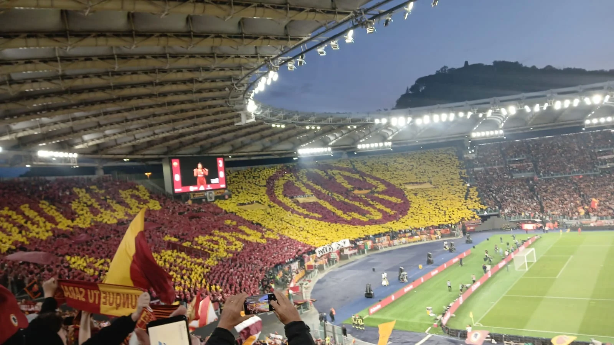
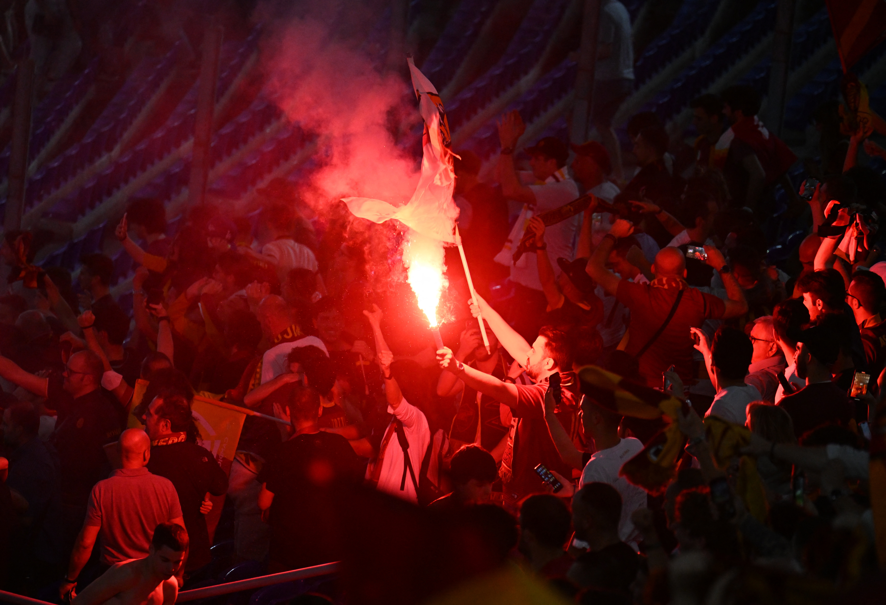
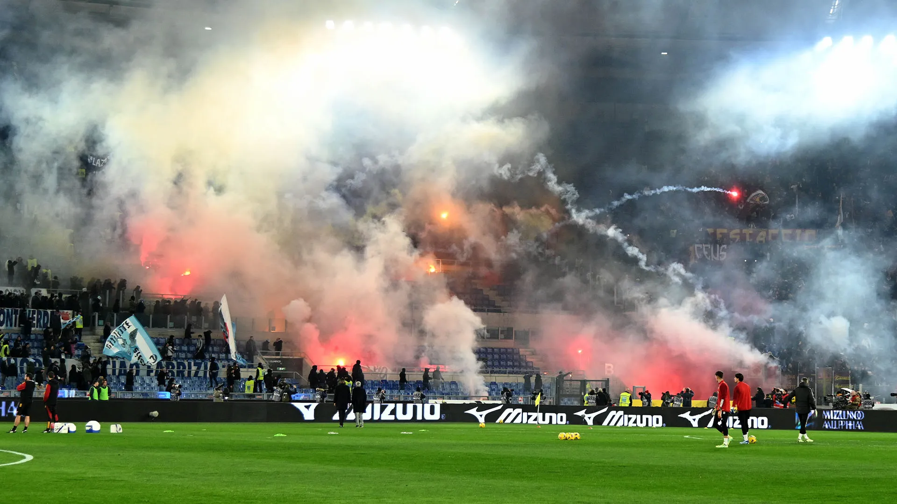

Roma

För många är atmosfären på Stadio Olimpico i Rom den vackraste i Europa, mycket tack vare den djupa musikalitet och estetik som de romerska supportrarna besitter. Innan matchen ens har blåst igång förenas hela arenan i hymnen ”Roma Roma Roma”, där halsdukar sträcks mot himlen och tiotusentals röster sjunger med en sådan kraft och känsla att det ofta rör besökare till tårar. Det är en stund av total kollektiv hängivenhet som visar på den nästan romantiska kärleken mellan staden och dess främsta fotbollsrepresentant.

Det taktiska och visuella centrumet är Curva Sud, där Romas mest hängivna fans skapar komplexa och konstnärligt högtstående tifon. Istället för bara enkel rök eller flaggor bygger de ofta upp stora scenografier som hyllar stadens antika historia, dess legendariska spelare som Francesco Totti eller politiska budskap om lokal stolthet. Färgerna karminrött och guldgult används med en precision som förvandlar läktaren till en levande målning, vilket ger matcherna en unik inramning av italiensk kultur och tradition.

Under själva spelet är publiken i Rom känd för sitt enorma temperament; varje domslut diskuteras högljutt och varje teknisk finess belönas med ovationer. Det är en teatralisk atmosfär där supportrarna lever varje sekund av matchen med en emotionell bergochdalbana som smittar av sig på planen. Denna passionerade närvaro gör att varje hemmamatch känns som en avgörande strid, där publiken kräver lika mycket hjärta från spelarna som de själva ger på läktaren.